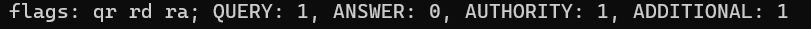

®️ DNS
1. Création d'un sous-domaine
Après s'être connecté sur OVH :
- Aller au menu à gauche "Web Cloud"
- Puis "Zone DNS"
- Cliquer sur le domaine
- Appuyer sur le bouton "Ajouter une entrée"
- Sélectionner le champ de pointage DNS "A" (adresse IPv4)
- Saisir le nom du sous-domaine et en cible saisir l'adresse IPv4 de la VM
2. Contrôle de l'activation du sous-domaine
- Sur la bash (Powershell en VM) saisir l'instruction suivante :
dig [SOUS-DOMAINE].[DOMAINE].tld
Dans l'exemple ci-après, la réponse mentionnée indique que la demande de requête a bien été enregistrée,
mais le domaine n'est pas encore activé :

- Sur le site dnschecker.org
- Via l'url :
culr http://[SOUS-DOMAINE].[DOMAINE].fr
Le sous-domaine créé est encore en HTTP et si le domaine est activé, la fênetre doit afficher "404 Not
Found"
Retour au menu
Retour au sommaire